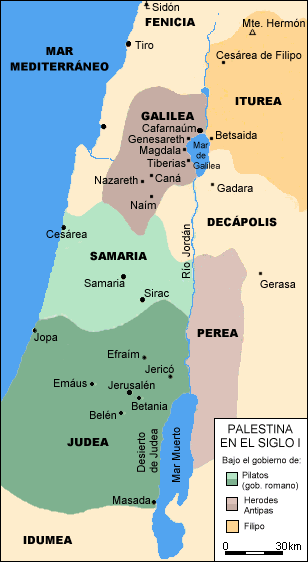

Summary and index
Harmony
Search by verse number

Geography
Links
|
Introduction Summary and index Harmony Search by verse number |
|
Spanish (Español)
Geography |
Basic geographical and historical facts

Judea and Galilee
The jews from Judea were the most
zealous conservatives of religious traditions.
They didn't consider the samaritans as jews (ie, brothers in religion)
[note]; they tolerate the galileans, though
looked down at them as rustic people.
In Jerusalem was the Temple, the main place of the jew religion.
Also in Judea were Bethlehem (where Jesus was born)
and Bethany (where he settled at Lazarus' house).
Galilee, at the west side of the Sea of Galilee (also known as
Genesareth or Tiberias)
was a cosmopolitan region, with much commercial activity.
In these places, in Nazareth, Jesus passed his youth, and the beautiful
surroundings of the lake were very frequently the scenario of his teachings.
Capernaum, a fishing city that was a that time a center of political and commercial
business and later disappeared, was chosen by Jesus as a point of reference
in his several missionary tours through Galilee.
Political situation
The life of the jew people was difficult not only because of the political
problem, but also because of the cultural problem:
Greece exerted a strong influence in the intellectual circles and
the traditions and racial purity was threatened by the intercourse
of different nations.
The people spoke the aramean language; many spoke also the vulgar greek
(koine) and some also the latin language.
The hebrew idiom only was known by the priests.
In the first century, Palestine was composed of
Judea, Samaria, Galilee and Perea
(sometimes Idumea is also included).
The ministry of Jesus takes place mainly in Galilee
(centered at Capernaum) and in Judea (centered at Jerusalem).
Palestine was ruled by the romans, but the political regime was variable.
Sometimes there was a "king", professedly jew but in fact under Rome's control;
in other cases, a roman procurator ruled.
In any event, the governors were cruel and wicked, and the jews hate them;
equally hated were the .
publicans, tax collectors.
The jews hoped anxiously for being freed from the roman's yoke, and the revolts
were frequent.
When Jesus was born, Herod the Great, idumean, was the "king" of Palestine.
When he died, his son Herod Antipas ruled Galilee and Perea;
his brothers Philip and Arquelaus took Iturea and Judea-Samaria respectively.
But Arquelao was soon removed by Rome, and a roman procurator was assigned
in the times of Jesus' public life, it was Poncio Pilatus.
Note:
After the golden age (kings David and Salomon, 1000 BC), the jews divided into two kingdoms: Judah in the south(capital: Jerusalem) and Israel in the north (capital: Samaria). Each kingdom suffered the exile on distinct occasions, but the people from Judah managed to settle down again without mixing with other nations; on the other side, the north nation (that became known as Samaria) joined with other people when they returned from the exile. This caused the scandal of the jews, who stopped considering the samaritans as truly jews; in reprisal, the samaritans didn't go anymore to the temple of Jesusalem, and built their own temple. At the times of Jesus, "israelite" and "jew" are already synonyms, and the rupture between the two nations is total. To be noted is the fact that Jesus, notwithstanding his attitude with the samaritan woman and his parable of the good samaritan, instruct his disciples to not preach to the samaritans, but only to "the sheeps from Israel"
[back]
[Additional information can be found in the links page]

|
Hernán J. González http://hjg.com.ar Buenos Aires, Argentina - March 2001 Last revision: 08/09/2001 |